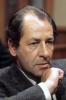

Country:United States, 85 minutes
Spoken languages:
Genres:Sci-Fi, Horror
Director(s):Freddie Francis
Writer(s):Milton Subotsky, Joseph Millard
Video Codec:Unknown
Number: 1512


Certification:
Storyline:
A group of scientists are possessed by an alien force when they investigate a meteor shower in a rural field.
Cast: 


Medium: Original DVD,
Comments: Part of: Sci-Fi Classics - 50 Movies
Loaned: No
Aspect ratio: Unknown